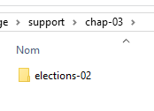
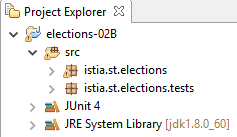
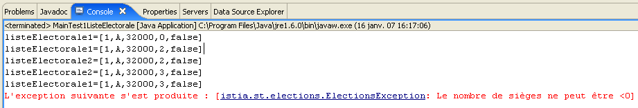
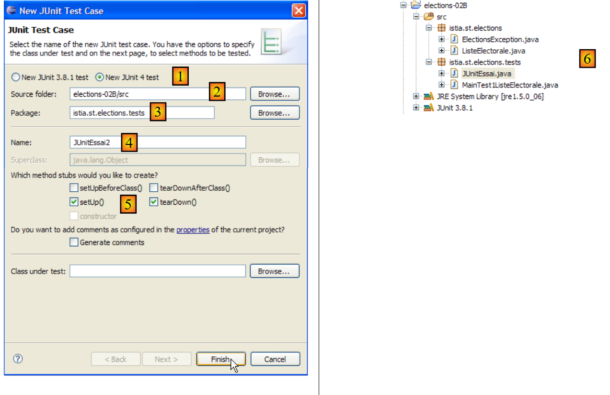
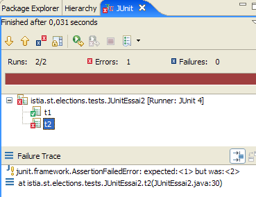
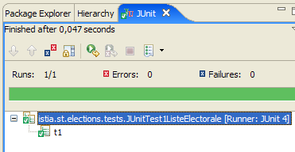
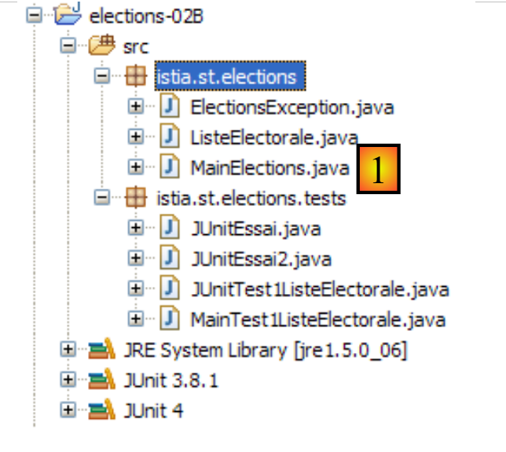

3. [TD] : Classes
Mots clés : classe, interface, héritage, exception, polymorphisme
Lectures conseillées :
- paragraphes 2.1, 2.2, 2.4 et 2.7 du chapitre 2 de [ref1] : Classes et interfaces
- paragraphes 3.3 (classe String), 3.5 (classe ArrayList), 3.6 (classe Arrays)
Dans la partie 1 de l'exercice ELECTIONS aucune classe n'a été utilisée. On a construit une solution comme on l'aurait construite en langage C. Nous introduisons maintenant la notion de classe Java.
3.1. Support
 |  |
Le dossier [support / chap-03] contient le projet Eclipse de ce chapitre.
On travaillera désormais avec le JDK 1.8 car certains des projets à suivre nécessitent ce JDK. Pour connaître le JDK utilisé, procédez de la façon suivante :
 |
 |
- en [4], le JRE (Java Runtime Environment) utilisé. Ce JRE est en fait ici un JDK (Java Development Kit), ici [jdk1.8.0_60]. Si ce n'est pas un JDK ou si vous avez une version inférieure à 1.8, procédez comme suit [5-21] ;
 |
- en [8], le JRE utilisé actuellement par défaut par Eclipse ;
- en [11], les différents JDK et JRE actuellement connus par Eclipse ;
 |
- en [15], choisissez un JDK plutôt qu'un JRE. Ce document utilise des projets Maven qui ont besoin d'un JDK ;
 |
 |
- en [21], on a un JDK de version >=1.8 ;
- en [22-23], accédez aux facets (différentes vues d'un même projet Eclipse) du projet ;
 |
- en [24], vérifiez que vous utilisez une version Java >=1.8 ;
3.2. La classe [ListeElectorale]
En langage C, nous aurions probablement utilisé une structure pour représenter une liste participant à l'élection. Elle aurait pu être de la forme suivante :
La notion de structure n'existe pas dans le langage Java. Il faut la remplacer par celle de classe. On décide donc de créer une classe pour mémoriser les informations sur une liste candidate. Celle-ci aurait le squelette suivant :
package istia.st.elections;
public class ListeElectorale {
/**
* identité de la liste
*/
private int id;
/**
* nom de la liste
*/
private String nom;
/**
* nombre de voix de la liste
*/
private int voix;
/**
* nombre de sièges de la liste
*/
private int sieges;
/**
* indique si la liste est éliminée ou non
*/
private boolean elimine;
/**
* constructeur par défaut
*/
public ListeElectorale() {
}
/**
*
* @param nom String : le nom de la liste
* @param voix int : son nombre de voix
* @param sieges int : son nombre de sieges
* @param elimine boolean : son état éliminé ou non
*/
public ListeElectorale(int id,String nom, int voix, int sieges, boolean elimine) {
...
}
/**
*
* @return int : l'identifiant de la liste
*/
public int getId() {
...
}
/**
* initialise l'identifiant de liste
* @param id int : identifiant de la liste
* @throws ElectionsException si id<1
*/
public void setId(int id) {
...
}
/**
*
* @return String : le nom de la liste
*/
public String getNom() {
...
}
/**
* initialise le nom de la liste
* @param nom String : nom de la liste
* @throws ElectionsException si le nom est vide ou blanc
*/
public void setNom(String nom) {
...
}
/**
*
* @return int : le nombre de voix de la liste
*/
public int getVoix() {
...
}
/**
* initialise le nombre de voix de la liste
* @param voix int : le nombre de voix de la liste
*/
public void setVoix(int voix) {
...
}
/**
*
* @return int : le nombre de sièges de la liste
*/
public int getSieges() {
...
}
/**
* fixe le nombre de sièges de la liste
* @param sieges int : le nombre de sièges de la liste
*/
public void setSieges(int sieges) {
...
}
/**
*
* @return boolean : valeur du champ elimine
*/
public boolean isElimine() {
...
}
/**
*
* @param sieges int
*/
public void setElimine(boolean elimine) {
...
}
/**
*
* @return String : identité de la liste électorale
*/
public String toString() {
...
}
}
- ligne 8 : n° identifiant une liste de façon unique. N'est pas indispensable ici mais est prévu pour une utilisation future.
- ligne 13 : le nom de la liste.
- ligne 17 : le nombre de voix de la liste
- ligne 21 : le nombre de sièges de la liste
- ligne 25 : booléen indiquant si la liste est éliminée (pourcentage de voix obtenues au-dessous du seuil électoral) ou non.
Chaque champ privé nommé [xyz] peut être initialisé par une méthode nommée [setXyz]. La méthode [getXyz] permet elle d'obtenir la valeur du champ privé [xyz]. Dans le cas particulier où [xyz] est un champ de type booléen, la méthode [getXyz] peut être remplacée par la méthode [isXyz]. Le nommage particulier de ces méthodes obéit à une norme de codage appelée norme JavaBean. Ainsi nous définissons les méthodes publiques suivantes :
- getId (ligne 48), setId (ligne 57)
- getNom (ligne 65), setNom (ligne 74)
- getVoix (ligne 82), setVoix (ligne 90)
- getSieges (ligne 98), setSieges (ligne 106)
-
isElimine (ligne 114), setElimine (ligne 122)
-
lignes 30-31 : définissent un constructeur sans paramètres. Celui-ci permet de créer un objet [ListeElectorale] sans l'initialiser. Celui-ci peut ensuite être initialisé grâce aux méthodes set.
- lignes 40-42 : définissent un constructeur permettant de créer un objet [ListeElectorale] tout en initialisant ses cinq champs privés.
- ligne 130-132 : définissent la méthode [toString] qui rend une chaîne de caractères donnant les valeurs des cinq champs de l'objet.
Un programme de test de la classe ListeElectorale pourrait être le suivant :
package istia.st.elections.tests;
import istia.st.elections.ListeElectorale;
public class MainTest1ListeElectorale {
public static void main(String[] args) {
// création d'une liste électorale
ListeElectorale listeElectorale1 = new ListeElectorale(1, "A", 32000,
0, false);
// affichage identité liste
System.out.println("listeElectorale1=" + listeElectorale1);
// modification du nombre de sièges
listeElectorale1.setSieges(2);
// affichage identité liste 1
System.out.println("listeElectorale1=" + listeElectorale1);
// une nouvelle liste électorale
ListeElectorale listeElectorale2 = listeElectorale1;
// affichage identité liste 2
System.out.println("listeElectorale2=" + listeElectorale2);
// modification du nombre de sièges
listeElectorale2.setSieges(3);
// affichage identité des 2 listes
System.out.println("listeElectorale2=" + listeElectorale2);
System.out.println("listeElectorale1=" + listeElectorale1);
}
}
L'environnement Eclipse de ce test pourrait être le suivant :
 |
- [1] : le projet s'appelle [elections-02A]
- [2] : l'application sera placée dans un paquetage, ici [istia.st.elections]
- [3] : [ListeElectorale.java] est le code source de la classe [ListeElectorale]
- [4] : les classes de test seront placées dans un paquetage, ici [istia.st.elections.tests]
- [5] : la classe de test [MainTest1ListeElectorale]
L'affichage écran obtenu après exécution du programme ci-dessus est le suivant :

Travail à faire : en vous aidant de ce qui précède, complétez le code de la classe ListeElectorale.
3.3. Création d'une classe d'exception [ElectionsException]
Parmi les différentes classes d'exception du langage Java, il en est une appelée [RuntimeException]. Cette classe dérive de la classe [Exception], racine de toutes les classes d'exception. La particularité des instances de [RuntimeException] ou instances dérivées est que l'on n'est pas obligé de les déclarer ou de les gérer. On les appelle des exceptions non contrôlées.
Prenons un premier exemple. La classe [BufferedReader] est une classe dont les instances permettent de lire des lignes de texte dans un flux de données. Elle possède une méthode [readLine] dont la signature est la suivante :
On voit que la méthode peut lancer une exception de type [IOException]. L'arborescence de cette classe est la suivante :
La classe [IOException] dérive de la classe [Exception] (ligne 3). Le compilateur nous force à gérer et à déclarer les exceptions de type [java.lang.Exception] ou dérivé (sauf pour la branche [RuntimeException] que nous allons présenter plus loin). Ainsi, pour lire une ligne de texte tapée au clavier, on sera obligé d'écrire quelque chose comme :
Prenons un autre exemple. Pour transformer une chaîne en entier on peut utiliser la méthode statique [Integer.parseInt] dont la signature est la suivante :
L'argument [s] est la chaîne de caractères à transformer en entier. On voit que la méthode peut lancer une exception de type [NumberFormatException]. L'arborescence de cette classe est la suivante :
La classe [NumberFormatException] dérive de la classe [RuntimeException] (ligne 4). Le compilateur ne nous force pas à gérer et à déclarer les exceptions de type [java.lang.RuntimeException] ou dérivé. Ainsi, on pourra écrire quelque chose comme :
Nous ne sommes pas obligés de mettre une clause [try - catch] pour gérer l'éventuelle exception générée par [Integer.parseInt] (ligne 9).
Il y a des avantages et inconvénients à créer et utiliser des classes d'exception dérivées de [RuntimeException] :
- au chapitre des avantages : le code est plus léger
- au chapitre des inconvénients : on peut être ramené aux méthodes du C où chaque fonction rend un code d'erreur que peu de gens utilisent, justement pour avoir un code plus léger. Lorsqu'une telle erreur non gérée se produit, le programme plante, généralement de façon peu élégante.
Nous décidons de créer une classe spéciale regroupant toutes les exceptions pouvant survenir dans notre application ELECTIONS. Elle s'appellera [ElectionsException] et dérivera de la classe [RuntimeException]. Son code est le suivant :
package istia.st.elections;
public class ElectionsException extends RuntimeException {
private static final long serialVersionUID = 1L;
public ElectionsException() {
super();
}
public ElectionsException(String message) {
super(message);
}
public ElectionsException(Throwable cause) {
super(cause);
}
public ElectionsException(String message, Throwable cause) {
super(message, cause);
}
}
- ligne 1 : nous plaçons la classe dans le paquetage [istia.st.elections] ;
- ligne 3 : la classe dérive de [RuntimeException]. Elle est donc non contrôlée ;
- ligne 4 : un identifiant de sérialisation qu'on peut ignorer pour le moment ;
- nous utiliserons dans notre application deux sortes de constructeur :
- celui classique des lignes 15-17 comme ci-dessous :
Dans ce cas, la méthode qui appelle une méthode lançant une telle exception peut la gérer comme suit :
// test exception
try {
listeElectorale2.setSieges(-3);
} catch (ElectionsException ex) {
System.err.println("L'exception suivante s'est produite : ["
+ ex.toString() + "]");
}
- (suite)
- ou celui des lignes 14-20 destiné à faire remonter une exception déjà survenue, en l'encapsulant dans une exception de type [ElectionsException] :
try {
...;
} catch (SQLException ex) {
// on encapsule l'exception
throw new ElectionsException("erreur de fermeture de la connexion à la BD",ex);
}
Cette seconde méthode a l'avantage de conserver l'information que peut contenir la première exception. Dans ce cas, la méthode qui appelle une méthode lançant une telle exception peut la gérer comme suit :
try {
...;
} catch (ElectionsException ex) {
System.out.println(ex.getMessage() + ", Cause : "+ ex.getCause().getMessage());
System.exit(1);
}
Travail à faire : reprenez le code de la classe ListeElectorale de façon à ce que les méthodes set lancent une exception de type [ElectionsException] si l'initialisation demandée est incorrecte, comme par exemple initialiser le nom avec une chaîne vide.
Le projet Eclipse de test de cette nouvelle version pourrait être le suivant :
 |
- [1] : le projet s'appelle [elections-02B]
- [2] : l'application est placée dans un paquetage, ici [istia.st.elections]
- [3] : les classes [ListeElectorale] et [ElectionsException]
- [4] : les classes de test sont placées dans un paquetage, ici [istia.st.elections.tests]
- [5] : la classe de test [MainTest1ListeElectorale]
La classe de test [MainTest1ListeElectorale] déjà étudiée est légèrement modifiée pour tester les cas d'exception :
package istia.st.elections.tests;
import istia.st.elections.ElectionsException;
import istia.st.elections.ListeElectorale;
public class MainTest1ListeElectorale {
public static void main(String[] args) {
// création d'une liste électorale
ListeElectorale listeElectorale1 = new ListeElectorale(1, "A", 32000,
0, false);
// affichage identité liste
System.out.println("listeElectorale1=" + listeElectorale1);
// modification du nombre de sièges
listeElectorale1.setSieges(2);
// affichage identité liste 1
System.out.println("listeElectorale1=" + listeElectorale1);
// une nouvelle liste électorale
ListeElectorale listeElectorale2 = listeElectorale1;
// affichage identité liste 2
System.out.println("listeElectorale2=" + listeElectorale2);
// modification du nombre de sièges
listeElectorale2.setSieges(3);
// affichage identité des 2 listes
System.out.println("listeElectorale2=" + listeElectorale2);
System.out.println("listeElectorale1=" + listeElectorale1);
// test exception
try {
listeElectorale2.setSieges(-3);
} catch (ElectionsException ex) {
System.err.println("L'exception suivante s'est produite : ["
+ ex.toString() + "]");
}
}
}
- ligne 28 : on essaie d'initialiser le nombre de sièges avec une valeur interdite
- ligne 30 : s'il y a exception, elle est affichée
L'exécution du test donne les résultats suivants :

On remarque que la classe [ListeElectorale] a bien généré une exception lorsqu'on a voulu initialiser le nombre de sièges avec une valeur invalide (ligne 28 du code).
3.4. Une classe de test unitaire
Le type de test précédent repose sur une vérification visuelle. On vérifie qu'on obtient à l'écran ce qui est attendu. C'est une méthode à déconseiller en milieu professionnel. Les tests doivent toujours être automatisés au maximum et viser à ne nécessiter aucune intervention humaine. L'être humain est en effet sujet à la fatigue et sa capacité à vérifier des tests s'émousse au fil de la journée.
Une application évolue au fil du temps. A chaque évolution, on doit vérifier que l'application ne "régresse" pas, c.a.d. qu'elle continue à passer les tests de bon fonctionnement qui avaient été faits lors de son écriture initiale. On appelle ces tests, des tests de "non régression". Une application un peu importante peut nécessiter des centaines de tests. On teste en effet chaque méthode de chaque classe de l'application. On appelle cela des tests unitaires. Ceux-ci peuvent mobiliser beaucoup de développeurs s'ils n'ont pas été automatisés.
Des outils ont été développés pour automatiser les tests. L'un d'eux s'appelle [JUnit]. C'est une bibliothèque de classes destinées à gérer les tests. Nous allons utiliser cet outil pour tester la classe [ListeElectorale].
Un programme de test JUnit (versions 4.x) a la forme suivante :
package istia.st.elections.tests;
import org.junit.Assert;
import org.junit.After;
import org.junit.Before;
import org.junit.Test;
public class JUnitEssai {
@Before
public void avant() throws Exception {
System.out.println("tearUp");
}
@After
public void après() throws Exception {
System.out.println("tearDown");
}
@Test
public void t1() {
System.out.println("test1");
Assert.assertEquals(1, 1);
}
@Test
public void t2() {
System.out.println("test2");
Assert.assertEquals(1, 2);
}
}
- ligne 1 : la classe a été placée dans le paquetage [istia.st.elections.tests] ;
- ligne 11 : la méthode annotée par l'annotation [@Before] est exécutée avant chaque test unitaire ;
- ligne 16 : la méthode annotée par l'annotation [@After] est exécutée après chaque test unitaire ;
- ligne 21 : une méthode annotée par l'annotation [@Test] est une méthode testée par le test unitaire. Le méthodes annotées par [@Test] seront exécutées les unes après les autres, sauf indication contraire du testeur qui peut sélectionner lui-même les méthodes à tester. Avant chaque exécution d'une méthode [@Test], la méthode [@Before] est exécutée. Après chaque exécution d'une méthode [@Test], la méthode [@After] est exécutée ;
- lignes 22-25 : définissent une méthode [t1] de test ;
- ligne 18 : l'une des méthodes [Assert.assert*] qui permet de vérifier des assertions. On trouve les méthodes [assert] suivantes :
- assertEquals(expression1, expression2) : vérifie que les valeurs des deux expressions sont égales. De nombreux types d'expression sont acceptés (int, String, float, double, boolean, char, short). Si les deux expressions ne sont pas égales, alors une exception de type [AssertionFailedError ] est lancée,
- assertEquals(réel1, réel2, delta) : vérifie que deux réels sont égaux à delta près, c.a.d abs(réel1-réel2)<=delta. On pourra écrire par exemple assertEquals(réel1, réel2, 1E-6) pour vérifier que deux valeurs sont égales à 10-6 près,
- assertEquals(message, expression1, expression2) et assertEquals(message, réel1, réel2, delta) sont des variantes permettant de préciser le message d'erreur à associer à l'exception de type [AssertionFailedError] lancée lorsque la méthode [assertEquals] échoue,
- assertNotNull(Object) et assertNotNull(message, Object) : vérifie que Object n'est pas égal à null,
- assertNull(Object) et assertNull(message, Object) : vérifie que Object est égal à null,
- assertSame(Object1, Object2) et assertSame(message, Object1, Object2) : vérifie que les références Object1 et Object2 pointent sur le même objet,
- assertNotSame(Object1, Object2) et assertNotSame(message, Object1, Object2) : vérifie que les références Object1 et Object2 ne pointent pas sur le même objet ;
- ligne 24 : cette assertion doit réussir ;
- ligne 30 : cette assertion doit échouer ;
Dans l'environnement Eclipse, la création d'une classe de test JUnit peut se faire de la façon suivante :
 |
- [1] : clic droit sur le paquetage dans lequel on veut ajouter la classe de test , puis option [JUnit / New / JUnit Test Case]
 |
- [1] : choix d'une version JUnit ;
- [2] : choix du dossier dans lequel la classe de test doit être créée ;
- [3] : choix du paquetage dans lequel la classe de test doit être créée ;
- [4] : nom de la classe de test ;
- [5] : choix des méthodes à inclure dans la classe qui va être générée ;
- [6] : la classe JUnitEssai a été générée
L'assistant précédent génère une classe quasiment vide :
package istia.st.elections.tests;
import org.junit.Assert;
import org.junit.After;
import org.junit.Before;
public class JUnitEssai {
@Before
public void setUp() throws Exception {
}
@After
public void tearDown() throws Exception {
}
}
Complétons et modifions le code précédent de la façon suivante :
package istia.st.elections.tests;
import org.junit.Assert;
import org.junit.After;
import org.junit.Before;
import org.junit.Test;
public class JUnitEssai2 {
@Before
public void avant() throws Exception {
System.out.println("tearUp");
}
@After
public void après() throws Exception {
System.out.println("tearDown");
}
@Test
public void t1() {
System.out.println("test1");
Assert.assertEquals(1, 1);
}
@Test
public void t2() {
System.out.println("test2");
Assert.assertEquals(1, 2);
}
}
Sous Eclipse, un clic droit sur la classe de test, puis option [Run as / JUnit test], permet de l'exécuter :

Les résultats obtenus à l'exécution de ce test sont les suivants :

Ci-dessus la méthode [test2] a échoué. A chaque fois qu'un test échoue, un message d'erreur lui est associé. Pour [test2], c'est celui affiché ci-dessus. Le message indique le n° de la ligne où l'erreur s'est produite (ligne 30). Ligne 30, l'appel qui a échoué était :
Assert.assertEquals(1, 2);
Le premier paramètre est appelé la valeur attendue, le second la valeur réelle. Le message d'erreur de [test2] ci-dessus indique que la valeur attendue était 2 mais que la valeur réelle a été 3.
Enfin, les messages écrits sur la console par les différentes méthodes de test ont été les suivants :

Ces messages montrent que les méthodes [@Before] et [@After] ont bien été appelées respectivement, avant et après chaque méthode de test.
Les classes de test ne sont pas nécessairement écrites par les développeurs eux-mêmes. Elles peuvent l'être par les personnes qui ont écrit les spécifications de l'application. Certaines méthodes de développement dites TDD (Test Driven Development) préconisent l'écriture des classes de tests avant même l'écriture des classes à tester. Cela permet parfois de clarifier des spécifications qui pourraient sinon être interprétées de plusieurs façons.
Créons un test JUnit 4, appelé [JUnitTest1ListeElectorale], pour la classe [ListeElectorale]. Sous Eclipse, on procédera comme décrit précédemment :
 |  |
Nous complétons le code généré par l'assistant de la façon suivante :
package istia.st.elections.tests;
import org.junit.Assert;
import istia.st.elections.ElectionsException;
import istia.st.elections.ListeElectorale;
import org.junit.Test;
public class JUnitTest1ListeElectorale {
@Test
public void t1() {
// création liste électorale
ListeElectorale liste = new ListeElectorale(1, "a", 32000, 0, false);
// vérifications
Assert.assertEquals("a", liste.getNom());
Assert.assertEquals(32000, liste.getVoix());
Assert.assertEquals(false, liste.isElimine());
Assert.assertEquals(0, liste.getSieges());
// vérification validité id
boolean erreur = false;
try {
liste.setId(-4);
} catch (ElectionsException e) {
erreur = true;
}
Assert.assertEquals(true, erreur);
// vérification validité nom
erreur = false;
try {
liste.setNom("");
} catch (ElectionsException e) {
erreur = true;
}
Assert.assertEquals(true, erreur);
// vérification validité voix
erreur = false;
try {
liste.setVoix(-4);
} catch (ElectionsException e) {
erreur = true;
}
Assert.assertEquals(true, erreur);
// vérification validité sièges
erreur = false;
try {
liste.setSieges(-4);
} catch (ElectionsException e) {
erreur = true;
}
Assert.assertEquals(true, erreur);
}
}
L'exécution du test donne le résultat suivant :

Les tests sont réussis. Nous considèrerons désormais que nous avons une classe [ListeElectorale] opérationnelle.
3.5. MainElections : version 2
Lectures conseillées :
- paragraphes 2.1, 2.2, 2.4 et 2.7 du chapitre 2 de [1] : Classes et interfaces
- paragraphes 3.3 (classe String), 3.5 (classe ArrayList), 3.6 (classe Arrays)
On désire réécrire l'application [Elections] en y ajoutant les nouvelles contraintes suivantes :
- on utilisera la classe [ListeElectorale] pour représenter une liste candidate
- l'application demandera au clavier les informations suivantes :
- le nombre de sièges à pourvoir
- les noms et voix des listes. On ne sait pas à priori combien il y a de listes. La dernière liste sera signalée par un nom égal à la chaîne "*".
- parce qu'on ne connaît pas à priori le nombre de listes, celles-ci seront tout d'abord mémorisées dans un objet de type [ArrayList]. Puis, lorsque toutes les listes auront été saisies, elles seront transférées dans un tableau de listes.
- les résultats seront affichés par ordre décroissant du nombre de sièges obtenus.
Pour trier un tableau T, on dispose de différentes méthodes statiques de la classe [Arrays] :
- Arrays.sort(T) : trie le tableau T selon un ordre naturel s'il en a un (croissant pour les nombres, les dates, alphabétique pour les chaînes, ...)
- Arrays.sort(T,comparateur) : pour trier des tableaux T n'ayant pas un ordre naturel. C'est le cas ici du tableau des listes qu'il faut trier selon un champ particulier de la liste : le nombre de sièges obtenus.
Dans la méthode Arrays.sort(T,comparateur), le paramètre comparateur est un objet implémentant l'interface Comparator suivante :

- la méthode compare permet de comparer deux éléments du tableau T
- la méthode equals permet de dire si deux objets sont égaux
Les deux méthodes comparent des types Object obj1 et obj2. Dire que obj1<obj2 ou obj1=obj2 ou obj1>obj2 dépend de la relation d'ordre que l'on veut créer entre les deux objets. C'est au développeur qui implémente cette interface d'indiquer comment on sait que :
- obj1 est plus petit que obj2
- obj1 est plus grand que obj2
- obj1 est égal à obj2
La classe Object dont dérive toute classe Java dispose déjà d'une méthode [equals]. Pour trier un tableau T d'objets de type O, la méthode [equals] de la classe O n'est pas utile. On peut donc laisser l'implémentation par défaut apportée par la classe Object. Seule la méthode [compare] doit être alors implémentée. Cette méthode est appelée de façon répétée par la méthode [Arrays.sort]. Celle-ci va à chaque fois passer comme paramètres obj1 et obj2 de la méthode compare, deux éléments du tableau T à trier. Dans notre cas, ces éléments seront de type [ListeElectorale]. On notera ici le polymorphisme à l'oeuvre. La méthode [compare] est définie comme recevant des paramètres de type [Object]. Cela veut dire qu'elle peut recevoir des paramètres de type [Object] ou dérivé (polymorphisme). Comme [Object] est la classe parent de toutes les classes Java, les paramètres effectifs peuvent avoir le type [ListeElectorale].
Pour un tri dans l'ordre croissant, la méthode [compare] doit rendre :
- -1 si obj1 est plus petit que obj2
- +1 si obj1 est plus grand que obj2
- 0 si obj1 est égal à obj2
Pour un tri dans l'ordre décroissant, les valeurs +1 et -1 sont inversées. Les termes "est plus petit que", "est plus grand que", "est égal à" expriment une relation d'ordre. Pour des objets de type [ListeElectorale], on aura la relation liste1 "est plus petit que" liste2 si liste1 a moins de voix que liste2.
Dans le même fichier source que la classe [MainElections], on pourra ajouter une deuxième classe :
- ligne 2 : la classe n'est pas déclarée publique. Dans un fichier source Java, il peut y avoir plusieurs classes mais une seule peut avoir l'attribut public, celle qui porte le nom du fichier source.
Dans la méthode compare précédente, les paramètres sont de type Object, ce qui oblige lignes 7 et 8, à faire un transtypage des paramètres de la méthode, du type Object vers le type ListeElectorale. La signature de la méthode compare est imposée par l'interface Comparator qui a été écrite pour comparer des objets quelconques. Depuis le JDK 1.5, il existe une interface Comparator générique : Comparator<T> où T est un type Java quelconque. La méthode compare de l'interface Comparator<T> compare des objets de type T et non de type Object ce qui évite les transtypages précédents. La classe de comparaison des objets de type ListeElectorale pourrait ressembler à ceci :
// classe de comparaison de listes électorales
class CompareListesElectorales implements Comparator<ListeElectorale> {
// comparaison de deux listes électorales selon le nombre de sièges
public int compare(ListeElectorale listeElectorale1,
ListeElectorale listeElectorale2) {
...
}
}
- ligne 2 : la classe implémente l'interface Comparator<ListeElectorale>
- lignes 5-6 : les paramètres de la méthode compare sont de type ListeElectorale. Le transtypage est désormais inutile.
Le JDK 1.5 a introduit le concept de classe / interface générique pour diverses classes / interfaces du JDK 1.4 qui manipulaient initialement uniquement des objets de type Object. C'est le cas des listes, dictionnaires, ...
Nous avons dit un peu plus haut que, parce qu'on ne connaissait pas le nombre de listes, on ne pouvait mémoriser celles-ci dans un tableau. Elles peuvent être mémorisées dans un objet ArrayList qui implémente la notion de "liste d'objets". Cette classe mémorise des objets de type Object. Depuis le JDK 1.5, il existe des listes d'objets typés. Ainsi on utilisera un objet ArrayList<ListeElectorale> pour mémoriser les listes avant de les transférer dans un tableau. Si ce dernier s'appelle tListes, son tri sera obtenu par l'instruction :
// tri des listes
Arrays.sort(tListes, new CompareListesElectorales());
où CompareListesElectorales est la classe implémentant l'interface Comparator<ListeElectorale>.
Travail à faire : réécrivez l'application [Elections] en tenant compte de ces nouvelles spécifications.
Le projet Eclipse pourrait être le suivant :
 |
Un exemple d'exécution de [1] est le suivant :